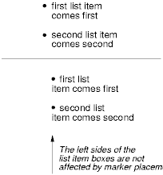

Содержание
В некоторых случаях бывает необходимо, чтобы пользовательские агенты (ПА) отображали содержимое не из дерева документа. Известный пример - нумерованный список: автор не хочет, чтобы нумерация выводилась явным образом, он или она хотят, чтобы ПА генерировал нумерацию автоматически. Также автор может пожелать, чтобы ПА вставлял слово "Figure" перед заглавием или фигурой или "Chapter 7" в начале 7 главы. В особенности для аудио и брайль-носителей, ПА должны иметь возможность вставить эти строки.
В CSS2 содержимое может генерироваться с помощью различных механизмов:
Ниже описаны механизмы, ассоциированные со свойством 'content'.
Авторы специфицируют стиль и размещение генерируемого содержимого с помощью псевдоэлементов :before и :after. Как видно из их имён, псевдоэлементы :before и :after специфицируют размещение содержимого до и после содержимого дерева документа элемента. Свойство 'content' в соединении с этими псевдоэлементами специфицирует, что же будет вставлено.
Следующее правило вставляет строку "Note: " перед содержимым каждого элемента P, чей атрибут "class" имеет значение "note":
P.note:before { content: "Note: " }Форматирующие объекты (напр., боксы), генерируемые элементом, включают генерируемое содержимое. Так, например, изменение вышеприведённой таблицы стилей:
P.note:before { content: "Note: " }
P.note { border: solid green }
вызовет появление сплошной зелёной рамки вокруг параграфа, включая начальную строку.
Псевдоэлементы :before и :after наследуют любые наследуемые свойства из тех элементов дерева документа, к которым они присоединены.
Следующие правила вставляют открывающий знак кавычек перед каждым элементом Q. Цвет знака кавычки - красный, но шрифт будет тот же, что и шрифт остальной части элемента Q:
Q:before {
content: open-quote;
color: red
}В объявлениях псевдоэлементов :before или :after ненаследуемые свойства получают свои начальные значения.
Так, например, поскольку начальное значение свойства 'display' - 'inline', кавычка в предыдущем примере вставляется как инлайн-бокс (т.е. на той же самой строке, что и содержимое начального текста элемента). В следующем примере свойство 'display' явно устанавливается в 'block', так что вставленный текст становится блоком:
BODY:after {
content: "The End";
display: block;
margin-top: 2em;
text-align: center;
}
Обратите внимание, что пользователи аудио-ПА услышат слова "The End" после вывода оставшейся части содержимого BODY.
ПА обязаны игнорировать следующие
свойства при наличии псевдоэлементов :before и
:after:
'position', 'float', свойства списков
и таблиц.
Псевдоэлементы :before и :after допускают значения свойства 'display':
Примечание. Другие значения могут быть допущены в будущих уровнях CSS.
Это свойство используется с псевдоэлементами :before и :after для генерации
содержимого документа.
Значения имеют следующий смысл:
Свойство 'display' регулирует, куда помещается содержимое, в блок, инлайн- или маркированный бокс.
Авторы должны поместить объявление 'content' в правила @media, если содержимое является медиа-чувствительным. Например, буквенный текст может использоваться для любой группы носителей, но изображения применяются только к медиа-группам visual + bitmap, а звуковые файлы применяются только к звуковым медиа-группам.
Следующее правило вызывает проигрывание звукового файла в конце отрезка с кавычками (см. дополнительные механизмы в разделе "звуковые таблицы стилей"):
@media aural {
BLOCKQUOTE:after { content: url("beautiful-music.wav") }
}Следующее правило вставляет текст атрибута "alt" HTML перед изображением. Если изображение не выводится, пользователь увидит текст "alt".
IMG:before { content: attr(alt)}Авторы могут включать новые строки в генерируемое содержимое путём ввода escape-последовательности "\A" в одной из строк после свойства 'content'. Это вставляет форсированный обрыв строки, подобно элементу BR в HTML. См. дополнительную информацию об escape-последовательности "\A" в разделах "Строки" и "Символы и регистр".
H1:before {
display: block;
text-align: center;
content: "chapter\A hoofdstuk\A chapitre"
}Генерируемое содержимое не изменяет дерево документа. Обычно оно не передаётся обратно процессору языка документа (например, для повторного разбора).
Примечание. В будущих уровнях CSS свойство 'content' сможет принимать дополнительные значения, позволяя варьировать стиль участков генерируемого содержимого, но в CSS2 всё содержимое псевдоэлементов :before или :after имеет один стиль.
Могут быть следующие ситуации:
Это заголовок 'run-in' с псевдоэлементом :after, после которого идёт параграф с псевдоэлементом :before. В этом пример все псевдоэлементы являются инлайн (по умолчанию). Когда таблица стилей:
H3 { display: run-in }
H3:after { content: ": " }
P:before { content: "... " }
применяется к такому документу-источнику:
<H3>Centaurs</H3> <P>have hoofs <P>have a tail
визуальное форматирование будет таким:
Centaurs: ... have hoofs ... have a tail
В CSS2 авторы могут специфицировать, в чувствительной к стилю и контекстно-зависимой манере, как ПА должны отображать знаки кавычек. Свойство 'quotes' специфицирует пары знаков кавычек для каждого уровня внедрённого закавычивания. Свойство 'content' даёт доступ к таким знакам кавычек и вставляет их до и после закавычивания.
| Значение: | [<string> <string>]+ | none | inherit |
| Начальное: | зависит от ПА |
| Применяется: | ко всем элементам |
| Наследуется: | да |
| Процентное: | N/A |
| Носитель: | визуальный |
Это свойство специфицирует знаки кавычек для любого количества внедрённых закавычиваний. Значения имеют следующий смысл:
Применение следующей таблицы стилей:
/* Специфицируются пары кавычек двух уровней для двух языков */
Q:lang(en) { quotes: '"' '"' "'" "'" }
Q:lang(no) { quotes: "«" "»" "<" ">" }
/* Вставляются кавычки до и после содержимого элемента Q */
Q:before { content: open-quote }
Q:after { content: close-quote }
к данному фрагменту HTML:
<HTML lang="en">
<HEAD>
<TITLE>Quotes</TITLE>
</HEAD>
<BODY>
<P><Q>Quote me!</Q>
</BODY>
</HTML>
позволит ПАгенту выдать:
"Quote me!"
а данный фрагмент HTML:
<HTML lang="no">
<HEAD>
<TITLE>Quotes</TITLE>
</HEAD>
<BODY>
<P><Q>Trøndere gråter når <Q>Vinsjan på kaia</Q> blir deklamert.</Q>
</BODY>
</HTML>
выдаст:
«Trøndere gråter når <Vinsjan på kaia> blir deklamert.»
Примечание.
Хотя знаки кавычек, специфицированные в 'quotes' предыдущего примера, по соглашению находятся на
клавиатурах компьютера, установки для высококачественного вывода потребуют других символов ISO 10646.
В следующей информативной таблице приведён список некоторых символов кавычек ISO 10646:
|
Ориентировочное представление |
код ISO 10646 (hex) |
Описание |
|---|---|---|
| " | 0022 | КАВЫЧКА [двойная кавычка ASCII] |
| ' | 0027 | АПОСТРОФ [одиночная кавычка ASCII] |
| < | 2039 | ОДИНОЧНАЯ ЛЕВАЯ УГЛОВАЯ КАВЫЧКА |
| > | 203A | ОДИНОЧНАЯ ПРАВАЯ УГЛОВАЯ КАВЫЧКА |
| « | 00AB | ЛЕВАЯ ДВОЙНАЯ УГЛОВАЯ КАВЫЧКА |
| » | 00BB | ПРАВАЯ ДВОЙНАЯ УГЛОВАЯ КАВЫЧКА |
| ` | 2018 | ЛЕВАЯ ОДИНОЧНАЯ КАВЫЧКА [single high-6] |
| ' | 2019 | ПРАВАЯ ОДИНОЧНАЯ КАВЫЧКА [single high-9] |
| `` | 201C | ЛЕВАЯ ДВОЙНАЯ КАВЫЧКА [double high-6] |
| '' | 201D | ПРАВАЯ ДВОЙНАЯ КАВЫЧКА [double high-9] |
| ,, | 201E | ДВОЙНАЯ КАВЫЧКА LOW-9 [double low-9] |
Знаки кавычек вставляются в соответствующих местах документа значениями 'open-quote' и 'close-quote' свойства 'content'. Каждое вхождение 'open-quote' или 'close-quote' замещается одной их строк значения 'quotes', базируясь на глубине вложения.
'Open-quote' относится к первой кавычке из пары, 'close-quote' относится ко второй. То, какая пара кавычек используется, зависит от уровня вложения кавычек: число вхождений 'open-quote' во всём сгенерированном тексте перед текущим вхождением минус число вхождений 'close-quote'. Если глубина - 0, используется первая пара, если глубина - 1, вторая пара и т.д. Если глубина вложения больше, чем число пар, повторяется последняя пара.
Обратите внимание, что глубина вложения кавычек не зависит от вложения документа-источника или структуры форматирования.
Некоторые стили печати требуют, чтобы знак открывающей кавычки повторялся перед каждым параграфом блока кавычек, охватывающего несколько параграфов, но только последний параграф оканчивался знаком закрывающей кавычки. В CSS этого можно добиться вставкой "фантома" закрывающих кавычек. Ключевое слово 'no-close-quote' уменьшает уровень кавычек, но не вставляет знак кавычки.
Следующая таблица стилей помещает знаки открывающей кавычки в каждом параграфе в BLOCKQUOTE и вставляет одиночную закрывающую кавычку в конце:
BLOCKQUOTE P:before { content: open-quote }
BLOCKQUOTE P:after { content: no-close-quote }
BLOCKQUOTE P.last:after { content: close-quote }
Это относится к последнему параграфу, маркированному классом "last", поскольку нет селекторов, которые могут совпадать с последним потомком элемента.
Для симметрии имеется также ключевое слово 'no-open-quote', которое ничего не вставляет, а увеличивает глубину закавычивания на единицу.
Примечание. Если язык закавычивания отличается от языка окружающего текста, то лучше использовать знаки кавычек языка окружающего текста, а не языка закавычивания.
Французский внутри английского:
The device of the order of the garter is “Honi soit qui mal y pense.”Английский внутри французского:
Il disait: « Il faut mettre l'action en ‹ fast forward ›.»
Таблица стилей типа следующей установит свойство 'quotes' таким образом, что 'open-quote' и 'close-quote' будут корректно работать во всех элементах. Это правила для документов, содержащих только английский, французский или оба этих языка. Одно правило понадобится для каждого дополнительного языка. Обратите внимание на использование комбинатора-потомка (">") для установки кавычек в элементы на базе языка окружающего текста:
[LANG|=fr] > * { quotes: "«" "»" "\2039" "\203A" }
[LANG|=en] > * { quotes: "\201C" "\201D" "\2018" "\2019" }
Знаки кавычек для английского показаны здесь в такой форме, что большинство людей будет способно их напечатать. Если Вы можете печатать их напрямую, то они будут выглядеть примерно так:
[LANG|=fr] > * { quotes: "«" "»" "‹" "›" }
[LANG|=en] > * { quotes: "“" "”" "‘" "’" }Автоматическая нумерация в CSS2 контролируется двумя свойствами, 'counter-increment' и 'counter-reset'. Счётчики, определённые в этих свойствах, используются с функциями counter() и counters() свойства 'content'.
| Значение: | [ <identifier> <integer>? ]+ | none | inherit |
| Начальное: | none |
| Применяется: | ко всем элементам |
| Наследуется: | нет |
| Процентное: | N/A |
| Носитель: | все |
| Значение: | [ <identifier> <integer>? ]+ | none | inherit |
| Начальное: | none |
| Применяется: | ко всем элементам |
| Наследуется: | нет |
| Процентное: | N/A |
| Носитель: | все |
Свойство 'counter-increment' принимает одно или более имён счётчиков (идентификаторы), за каждым из которых может следовать целое число. Это число обозначает, насколько счётчик увеличивается при каждом появлении элемента. Увеличение по умолчанию - 1. Допустимы 0 и негативные значения.
Свойство 'counter-reset' также содержит список из одного или более имён счётчиков, за каждым из которых может следовать целое число. Целое число задаёт значение, в которое счётчик сбрасывается при каждом появлении элемента. По умолчанию - 0.
Если 'counter-increment' относится к счётчику, который не находится в области видимости (см. ниже) какого-либо 'counter-reset', то принимается, что счётчик установлен в 0 корневым элементом.
Здесь показан способ нумерации глав и разделов: "Chapter 1", "1.1", "1.2" и т.д.:
H1:before {
content: "Chapter " counter(chapter) ". ";
counter-increment: chapter; /* Добавляет 1 к главе */
counter-reset: section; /* Устанавливает раздел в 0 */
}
H2:before {
content: counter(chapter) "." counter(section) " ";
counter-increment: section;
}Если элемент увеличивает/сбрасывает счётчик и использует его (в свойстве 'content' в псевдоэлементах :before или :after), то счётчик используется после того, как увеличен/сброшен.
Если элемент и увеличивает, и сбрасывает счётчик, то счётчик сначала сбрасывается, а затем увеличивается.
Свойство 'counter-reset' следует правилам каскадирования. Таким образом, в соответствии с каскадированием, следующая таблица стилей:
H1 { counter-reset: section -1 }
H1 { counter-reset: imagenum 99 }
сбросит только 'imagenum'. Чтобы сбросить оба счётчика, их нужно специфицировать вместе:
H1 { counter-reset: section -1 imagenum 99 }
Счётчики являются "самовкладывающимися", т.е. повторное использование счётчика в элементах-потомках автоматически создаёт новый объект счётчика. Это важно, например, для таких случаев, как списки в HTML, где элементы могут вкладываться внутри себя на произвольную глубину, и может оказаться невозможным определить уникально именованный счётчик для каждого уровня.
Так, следующего достаточно для нумерации вложенных элементов списка. Результат очень похож на применение установки 'display:list-item' и 'list-style: inside' в элементе LI:
OL { counter-reset: item }
LI { display: block }
LI:before { content: counter(item) ". "; counter-increment: item }
Самовложение базируется на том принципе, что каждый элемент, имеющий 'counter-reset' для счётчика X, создаёт новый счётчик X, область видимости которого - элемент, его предшествующие родственники и все потомки элемента и его предшествующих родственников.
В предыдущем примере OL создаст счётчик, и все потомки OL будут ссылаться на этот счётчик.
Если мы обозначим с помощью item[n] nый экземпляр счётчика "item" и "(" and ")" - начало и конец области видимости, то следующий фрагмент HTML будет использовать указанные счётчики. (Мы используем ту же таблицу стилей, что и в предыдущем примере).
<OL> <!-- (set item[0] to 0 -->
<LI>item <!-- increment item[0] (= 1) -->
<LI>item <!-- increment item[0] (= 2) -->
<OL> <!-- (set item[1] to 0 -->
<LI>item <!-- increment item[1] (= 1) -->
<LI>item <!-- increment item[1] (= 2) -->
<LI>item <!-- increment item[1] (= 3) -->
<OL> <!-- (set item[2] to 0 -->
<LI>item <!-- increment item[2] (= 1) -->
</OL> <!-- ) -->
<OL> <!-- (set item[3] to 0 -->
<LI> <!-- increment item[3] (= 1) -->
</OL> <!-- ) -->
<LI>item <!-- increment item[1] (= 4) -->
</OL> <!-- ) -->
<LI>item <!-- increment item[0] (= 3) -->
<LI>item <!-- increment item[0] (= 4) -->
</OL> <!-- ) -->
<OL> <!-- (reset item[4] to 0 -->
<LI>item <!-- increment item[4] (= 1) -->
<LI>item <!-- increment item[4] (= 2) -->
</OL> <!-- ) -->
Функция 'counters()' генерирует строку, составленную из значений всех счётчиков с тем же самым именем, разделённых заданной строкой.
Следующая таблица стилей нумерует вложенные элементы списка как "1", "1.1", "1.1.1" и т.д.
OL { counter-reset: item }
LI { display: block }
LI:before { content: counters(item, "."); counter-increment: item }
По умолчанию счётчики форматируются десятичными
числами, а все стили, доступные для свойства 'list-style-type', доступны также для
счётчиков.
Обозначение будет такое:
counter(name)
для таблицы стилей по умолчанию, или:
counter(name, 'list-style-type')
Допустимы все стили, включая 'disc', 'circle', 'square' и 'none'.
H1:before { content: counter(chno, upper-latin) ". " }
H2:before { content: counter(section, upper-roman) " - " }
BLOCKQUOTE:after { content: " [" counter(bq, hebrew) "]" }
DIV.note:before { content: counter(notecntr, disc) " " }
P:before { content: counter(p, none) }
Элемент, который не отображается ('display' установлено в 'none'), не может установить или сбросить счётчик.
С помощью следующей таблицы стилей элементы H2 с классом "secret" не увеличивают 'count2'.
H2.secret {counter-increment: count2; display: none}В то же время, элементы с 'visibility', установленной в 'hidden', увеличивают счётчики.
Большинство элементов уровня блока в CSS
генерируют один основной бокс блока.
В этом разделе мы обсуждаем два механизма CSS,
которые заставляют элемент генерировать
два бокса: один основной бокс блока (для
содержимого элемента) и отдельный бокс
маркёра (для элемента оформления, такого
как кружок, изображение или номер). Бокс
маркёра может быть позиционирован внутри
или вне основного бокса. В отличие от
содержимого :before и :after, бокс маркёра не
влияет на позицию основного бокса, какой бы
ни была схема позиционирования.
Самым общим из этих двух механизмов является новый для CSS2 механизм, называемый маркёры. Механизм с более ограниченными возможностями привлекает свойства списков CSS1. Свойства списков дают авторам быстрый результат для многих сценариев упорядоченных и неупорядоченных списков. Однако маркёры дают авторам точный контроль над содержимым и позицией маркёров. Маркёры можно использовать вместе со счётчиками для создания новых стилей списков, нумерации примечаний на полях и многого другого.
Например, следующий пример иллюстрирует,
как маркёры могут использоваться для того,
чтобы добавлять точку после каждого
элемента нумерованного списка.
Эта программа HTML и таблица стилей:
<!DOCTYPE HTML PUBLIC "-//W3C//DTD HTML 4.0//EN">
<HTML>
<HEAD>
<TITLE>Создание списка с маркёрами</TITLE>
<STYLE type="text/css">
LI:before {
display: marker;
content: counter(mycounter, lower-roman) ".";
counter-increment: mycounter;
}
</STYLE>
</HEAD>
<BODY>
<OL>
<LI> Это первый элемент списка.
<LI> Это второй элемент списка.
<LI> Это третий элемент списка.
</OL>
</BODY>
</HTML>
должны дать на выходе примерно следующее:
i. Это первый элемент списка. ii. Это второй элемент списка. iii. Это третий элемент списка.
С помощью селекторов потомков и дочерних селекторов можно специфицировать маркёры различных типов в зависимости от глубины вложения списков.
Маркёры создаются путём установки свойства 'display' в 'marker' внутри псевдоэлементов :before или :after. Поскольку содержимое 'block' и 'inline' в :before и :after является частью основного бокса, генерируемого элементом, содержимое 'marker' форматируется в независимом боксе маркёра вне основного бокса. Боксы маркёра форматируются как единая строка (т.е. один бокс строки (строчный бокс)), поэтому они не обладают такой гибкостью, как поплавки. Боксы маркёра создаются только тогда, когда свойство 'content' псевдоэлементов действительно генерирует содержимое.
Боксы маркёра имеют заполнение и рамку, но не имеют полей.
Для псевдоэлемента :before базовая линия текста в боксе маркёра будет выровнена вертикально относительно базовой линии текста первой строки содержимого основного бокса. Если основной бокс не содержит текста, верхний внешний край бокса маркёра будет выровнен с верхним внешним краем основного бокса. Для псевдоэлемента :after базовая линия текста в боксе маркёра будет выровнена вертикально относительно базовой линии текста последней строки содержимого основного бокса. Если основной бокс не содержит текста, нижний внешний край бокса маркёра будет выровнен с нижним внешним краем основного бокса.
Высота бокса маркёра задаётся в свойстве 'line-height'. Бокс маркёра :before (:after) участвует в подсчёте высоты первого (последнего) строчного бокса основного бокса. Таким образом, маркёры выравниваются по первой и последней строке содержимого элемента, даже если боксы маркёра находятся в разных строчных боксах. Если в основном боксе отсутствует первый или последний строчный бокс, то бокс маркёра сам устанавливает свой первый строчный бокс.
Вертикальное выравнивание бокса маркёра внутри его строчного бокса специфицируется свойством 'vertical-align'.
Если значение свойства 'width' - 'auto', то ширина содержимого бокса маркёра является шириной содержимого, иначе - это значение 'width'. Для значений 'width' меньших, чем ширина содержимого, свойство 'overflow' специфицирует поведение при переполнении. Боксы маркёра могут перекрывать основные боксы. Для значений 'width' больших, чем ширина содержимого, свойство 'text-align' определяет горизонтальное выравнивание содержимого в боксе маркёра.
Свойство 'marker-offset'
специфицирует смещение по горизонтали
между боксом маркёра и ассоциированным основным
боксом. Расстояние измеряется между их
ближайшими краями рамок.
Если свойство 'display' имеет значение 'marker' для содержимого, генерируемого элементом с 'display: list-item', то бокс маркёра, генерируемый для ':before', замещает нормальный маркёр элемента списка.
В следующем примере содержимое
центрируется в боксе маркёра фиксированной
ширины.
Этот документ:
<!DOCTYPE HTML PUBLIC "-//W3C//DTD HTML 4.0//EN">
<HTML>
<HEAD>
<TITLE>Выравнивание содержимого в боксе маркёра</TITLE>
<STYLE type="text/css">
LI:before {
display: marker;
content: "(" counter(counter) ")";
counter-increment: counter;
width: 6em;
text-align: center;
}
</STYLE>
</HEAD>
<BODY>
<OL>
<LI> Это первый элемент списка.
<LI> Это второй элемент списка.
<LI> Это третий элемент списка.
</OL>
</BODY>
</HTML>
должен дать примерно такой вывод:
(1) Это первый
элемент списка.
(2) Это второй
элемент списка.
(3) Это третий
элемент списка.
В следующем примере создаются маркёры до и после элементов списка.
Этот документ:
<!DOCTYPE HTML PUBLIC "-//W3C//DTD HTML 4.0//EN">
<HTML>
<HEAD>
<TITLE>Маркёры до и после элементов списка</TITLE>
<STYLE type="text/css">
@media screen, print {
LI:before {
display: marker;
content: url("smiley.gif");
LI:after {
display: marker;
content: url("sad.gif");
}
}
</STYLE>
</HEAD>
<BODY>
<UL>
<LI>первый элемент списка появляется первым
<LI>второй элемент списка появляется вторым
</UL>
</BODY>
</HTML>
должен дать примерно такой вывод (здесь используется рисунок ascii вместо изображения gif улыбки):
:-) первый элемент списка
появляется первым :-(
:-) второй элемент списка
появляется вторым :-(
В следующем примере маркёры используются для нумерации примечаний (параграфов).
Данный документ:
<!DOCTYPE HTML PUBLIC "-//W3C//DTD HTML 4.0//EN">
<HTML>
<HEAD>
<TITLE>Маркёры для создания нумерованных примечаний 4</TITLE>
<STYLE type="text/css">
P { margin-left: 12 em; }
@media screen, print {
P.Note:before {
display: marker;
content: url("note.gif")
"Примечание " counter(note-counter) ":";
counter-increment: note-counter;
text-align: left;
width: 10em;
}
}
</STYLE>
</HEAD>
<BODY>
<P>Это первый параграф данного документа.</P>
<P CLASS="Note">Это очень короткий документ.</P>
<P>Это конец.</P>
</BODY>
</HTML>
должен дать примерно такой вывод:
Это первый параграф
данного документа.
Примечание 1: Это очень короткий
документ.
Это конец.
| Значение: | <length> | auto | inherit |
| Начальное: | auto |
| Применяется: | к элементам с 'display: marker' |
| Наследуется: | нет |
| Процентное: | N/A |
| Носитель: | визуальный |
Это свойство специфицирует расстояние между ближайшим краем рамки бокса маркёра и ассоциированным с ним основным боксом. Смещение может или специфицироваться пользователем (<length>), или выбираться ПА ('auto'). Значения размеров могут быть отрицательными, но могут существовать ограничения, в зависимости от специфики реализации.
В следующем примере показано, как маркёры
могут использоваться для добавления точек
после каждого элемента нумерованного
списка.
Эта программа HTML и таблица стилей:
<!DOCTYPE HTML PUBLIC "-//W3C//DTD HTML 4.0 Transitional//EN">
<HTML>
<HEAD>
<TITLE>Пример маркёров 5</TITLE>
<STYLE type="text/css">
P { margin-left: 8em } /* Создаёт пространство для счётчиков */
LI:before {
display: marker;
marker-offset: 3em;
content: counter(mycounter, lower-roman) ".";
counter-increment: mycounter;
}
</STYLE>
</HEAD>
<BODY>
<P> Это большой предшествующий параграф ...
<OL>
<LI> Это первый элемент списка.
<LI> Это второй элемент списка.
<LI> Это третий элемент списка.
</OL>
<P> Это большой последующий параграф ...
</BODY>
</HTML>
должен дать примерно такой вывод:
Это большой предшествующий
параграф ...
i. Это первый элемент списка.
ii. Это второй элемент списка.
iii. Это третий элемент списка.
Это большой последующий
параграф ...
Свойства списков создают базовое визуальное форматирование списков. Как и с более общими маркёрами, элемент с 'display: list-item' генерирует основной для содержимого элемента и необязательный бокс маркёра. Другие свойства списка позволяют авторам специфицировать тип маркёра (изображение, глиф или цифра) и его позицию относительно основного бокса (вне или внутри него перед содержимым). Они не позволяют авторам специфицировать другие стили (цвет, шрифт, выравнивание и т.п.) для маркёра списка или уточнять его позицию относительно основного бокса.
Следовательно, если маркёр M (созданный в 'display: marker') используется с элементом списка, созданным в свойстве списка, M замещает стандартный маркёр элемента списка.
Вместе со свойствами списка свойства фона применяются только к основному боксу; бокс маркёра 'outside' прозрачен. Маркёры дают больший контроль над стилем бокса маркёра.
| Значение: | disc | circle | square | decimal | decimal-leading-zero | lower-roman | upper-roman | lower-greek | lower-alpha | lower-latin | upper-alpha | upper-latin | hebrew | armenian | georgian | cjk-ideographic | hiragana | katakana | hiragana-iroha | katakana-iroha | none | inherit |
| Начальное: | disc |
| Применяется: | к элементам с 'display: list-item' |
| Наследуется: | да |
| Процентное: | N/A |
| Носитель: | визуальный |
Это свойство специфицирует вид маркёра элемента списка, если 'list-style-image' имеет значение 'none' или если изображение, на которое указывает URI, не может быть отображено. Значение 'none' специфицирует отсутствие маркёров, для других случаев имеются три типа маркёров: глифы, системы нумерации и алфавитные системы.
Глифы специфицируются с помощью disc, circle и square. Их точное представление зависит от ПА.
Системы нумерации специфицируются с помощью:
ПА, не распознающий системы нумерации, должен использовать 'decimal'.
Примечание. Этот документ не специфицирует точный механизм действия каждой системы нумерации (например, как вычисляются римские цифры). В будущих Примечаниях W3C могут быть даны дальнейшие разъяснения.
Алфавитные системы специфицируются с помощью:
Эта спецификация не определяет то, как происходит перенос алфавитной системы в конце алфавита. Например, после 26 элементов списка представление 'lower-latin' не определено. Поэтому для длинных списков мы рекомендуем, чтобы авторы специфицировали точные числа.
Например, следующий документ HTML:
<!DOCTYPE HTML PUBLIC "-//W3C//DTD HTML 4.0//EN">
<HTML>
<HEAD>
<TITLE>Нумерация латинскими буквами нижнего регистра</TITLE>
<STYLE type="text/css">
OL { list-style-type: lower-roman }
</STYLE>
</HEAD>
<BODY>
<OL>
<LI> Это первый элемент списка.
<LI> Это второй элемент списка.
<LI> Это третий элемент списка.
</OL>
</BODY>
</HTML>
может дать на выходе:
i Это первый элемент списка. ii Это второй элемент списка. iii Это третий элемент списка.
Обратите внимание, что выравнивание маркёров списка (здесь - по правому краю) зависит от ПА.
Примечание. Следующие версии CSS могут предоставить более совершенные механизмы международных стилей нумерации.
| Значение: | <uri> | none | inherit |
| Начальное: | none |
| Применяется: | к элементам с 'display: list-item' |
| Наследуется: | да |
| Процентное: | N/A |
| Носитель: | визуальный |
Это свойство определяет изображение, которое будет использоваться как маркёр элемента списка. Если изображение доступно, оно замещает маркёр, установленный 'list-style-type'.
В следующем примере устанавливается маркёр - изображение "ellipse.png" - в начале каждого элемента списка .
UL { list-style-image: url("http://png.com/ellipse.png") }
| Значение: | inside | outside | inherit |
| Начальное: | outside |
| Применяется: | к элементам с 'display: list-item' |
| Наследуется: | да |
| Процентное: | N/A |
| Носитель: | визуальный |
Это свойство специфицирует позицию бокса маркёра в основном боксе блока.
Значения имеют следующий смысл:
Например:
<HTML>
<HEAD>
<TITLE>Сравнение позиций inside/outside</TITLE>
<STYLE type="text/css">
UL { list-style: outside }
UL.compact { list-style: inside }
</STYLE>
</HEAD>
<BODY>
<UL>
<LI>first list item comes first
<LI>second list item comes second
</UL>
<UL class="compact">
<LI>first list item comes first
<LI>second list item comes second
</UL>
</BODY>
</HTML>
Этот пример отображается так:
 [D]
В тексте справа-налево маркёры должны выводиться с правой стороны бокса.
| Значение: | [ <'list-style-type'> || <'list-style-position'> || <'list-style-image'> ] | inherit |
| Начальное: | не определено для сокращённых свойств |
| Применяется: | к элементам с 'display: list-item' |
| Наследуется: | да |
| Процентное: | N/A |
| Носитель: | визуальный |
Свойство 'list-style' - это сокращённое обозначение для установки трёх свойств: 'list-style-type', 'list-style-image' и 'list-style-position' в одном месте в таблице стилей.
UL { list-style: upper-roman inside } /* Какой-либо UL */
UL > UL { list-style: circle outside } /* UL - потомок UL */Хотя авторы могут специфицировать информацию о 'list-style' непосредственно в элементах списка (напр., LI в HTML), это нужно делать аккуратно. Следующие правила похожи, но в первом объявляется селектор-потомок, а во втором (более специфический) дочерний селектор.
OL.alpha LI { list-style: lower-alpha } /* LI - потомок OL */
OL.alpha > LI { list-style: lower-alpha } /* LI-наследник OL */
Авторы, использующие только селекторы-потомки, могут не получить тот результат, на который рассчитывали. Рассмотрим следующие правила:
<HTML>
<HEAD>
<TITLE>ПРЕДУПРЕЖДЕНИЕ: Непредсказуемый результат из-за каскадирования</TITLE>
<STYLE type="text/css">
OL.alpha LI { list-style: lower-alpha }
UL LI { list-style: disc }
</STYLE>
</HEAD>
<BODY>
<OL class="alpha">
<LI>level 1
<UL>
<LI>level 2
</UL>
</OL>
</BODY>
</HTML>
Ожидается, что элементы списка уровня 1 будут маркированы лэйблами 'lower-alpha', а элементы уровня 2 - лэйблами 'disc'. Однако порядок каскадирования вызовет маскирование второго правила первым (которое содержит специфическую информацию класса). В следующих правилах для решения проблемы используется дочерний селектор:
OL.alpha > LI { list-style: lower-alpha }
UL LI { list-style: disc }
Другим решением может быть спецификация информации 'list-style' только для типа элемента списка:
OL.alpha { list-style: lower-alpha }
UL { list-style: disc }
При наследовании значения 'list-style' будут перенесены из элементов OL и UL в элементы LI. Это рекомендуемый способ спецификации информации стиля списка.
Значение URI может комбинироваться с любым другим значением, как здесь:
UL { list-style: url("http://png.com/ellipse.png") disc }
В данном примере 'disc' будет использоваться, если изображение недоступно.
Значение 'none' свойства 'list-style' устанавливает 'list-style-type' и 'list-style-image' в 'none':
UL { list-style: none }
В результате - никакие маркёры элементов списка не отображаются.
)window.location='http://png.com/ellipse.png'){kind=link}